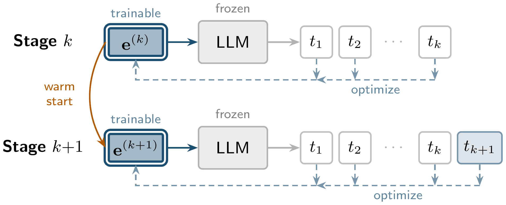
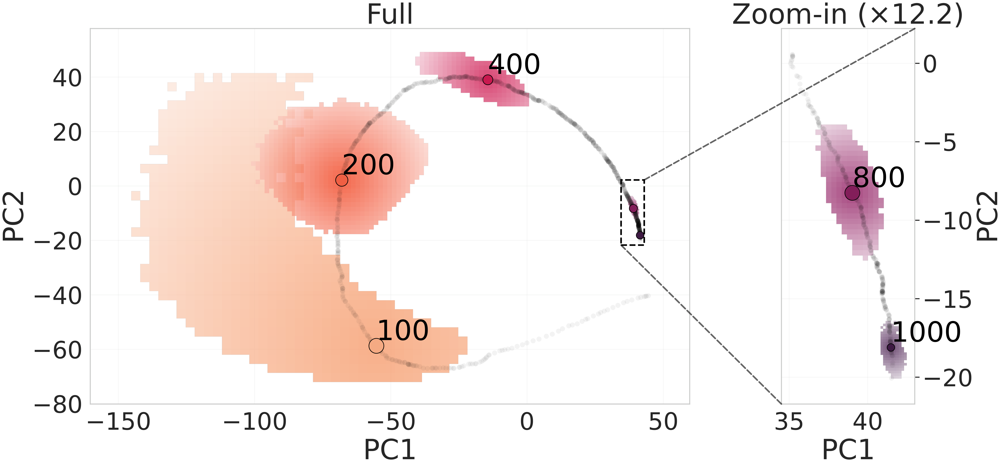
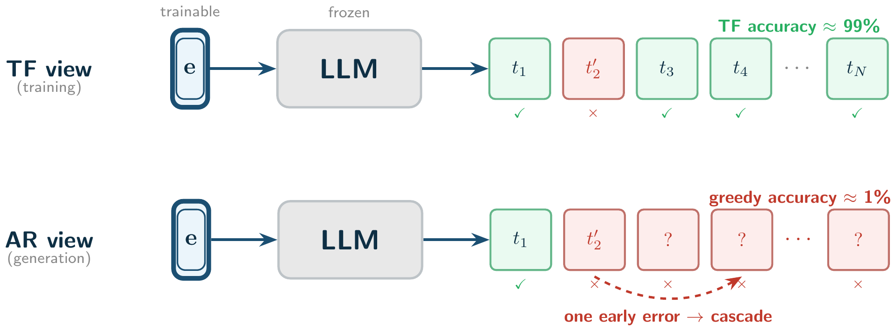
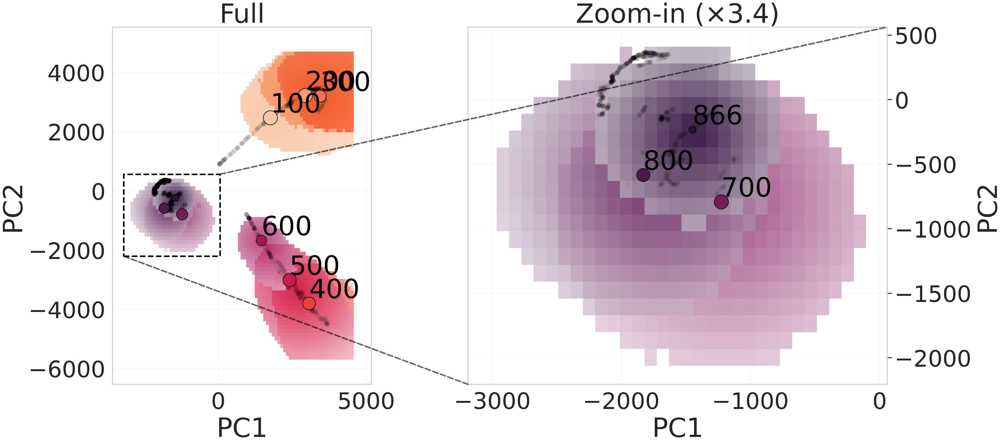
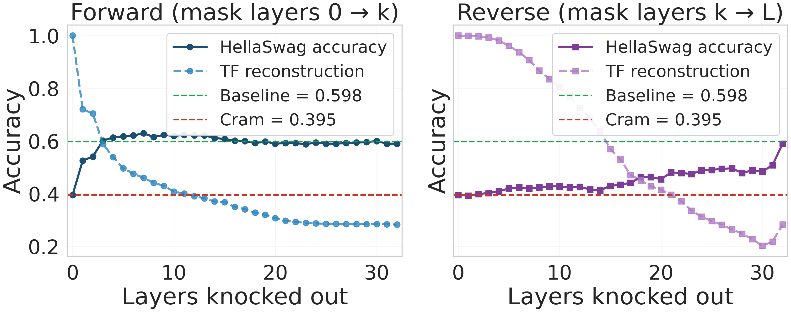

Train one embedding for a frozen LM. Grow the target one token at a time; advance only after perfect reconstruction.


Full cramming fixes length; progressive cramming fixes 100% reconstruction. Small teacher-forcing errors can cascade during generation:

| Model / Type | Tokens | TF Acc | Greedy |
|---|---|---|---|
| Llama-8B / Full | 1568 | 99.96% | 40.4% |
| Llama-8B / Progr. | 1438 | 100% | 100% |
| Pythia / Full | 512 | 99.71% | 44.2% |
| Pythia / Progr. | 430 | 100% | 100% |
Mean compressed tokens on 50 PG19 samples:
| Model | Tokens | +LowDim | Boost |
|---|---|---|---|
| Llama-3.1-8B | 1438 | 1697 | 1.2× |
| Pythia-1.4b | 430 | 500 | 1.2× |
| SmolLM2-1.7B | 335 | 957 | 2.9× |
| Gemma-3-4B | 214 | 697 | 3.3× |
Up to 3.3× more tokens.

Prepending the optimized embedding reduces accuracy, even with the original prefix in context:
| Model | HS Base | HS +Emb | ARC Base | ARC +Emb |
|---|---|---|---|---|
| Pythia-1.4b | 44.0% | 37.6% | 53.1% | 49.1% |
| SmolLM2-1.7B | 53.6% | 37.0% | 67.3% | 56.0% |
| Llama-3.1-8B | 61.9% | 40.8% | 63.5% | 43.3% |
HS = HellaSwag; ARC = ARC-E. +Emb = original context with the optimized embedding.
Generative 5-shot MMLU: accuracy falls to ~0%. A random embedding stays near baseline.

Early layers drive the disruption. The same pattern holds for Pythia-1.4B and SmolLM2-1.7B.